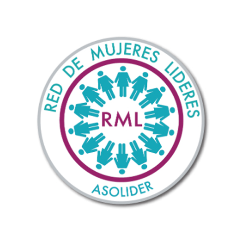
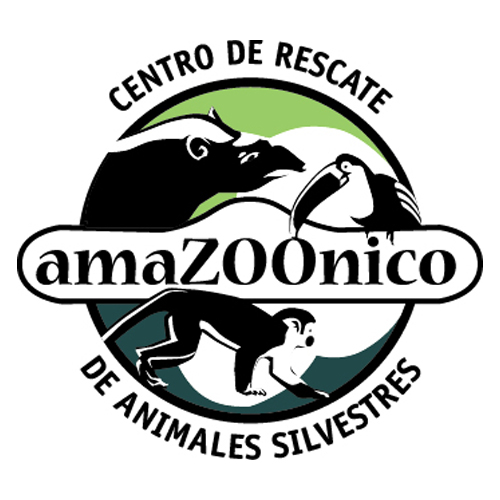
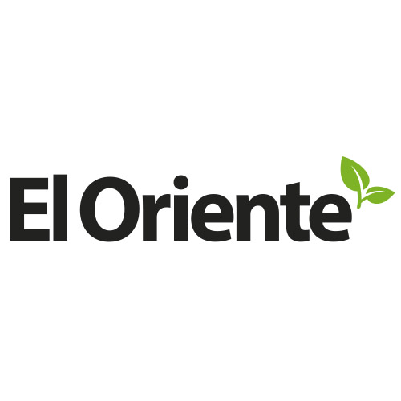

LA UNIVERSIDAD
¿Quiénes somos?
Historia
Autoridades
Ikiam en cifras
Campus Ikiam
Vinculación
Vinculación con la Sociedad
Visitas Guiadas
Vida Universitaria
Gaceta Universitaria
Consultas Jurídicas
Plan Estratégico de Desarrollo Institucional 2020 - 2023
Órgano Electoral 2020
Oferta académica
Ingeniería en Geociencias
Ingeniería en Ecosistemas
Ingeniería en Ciencias del Agua
Licenciatura en Biocomercio
Ingeniería en Agroecología
Ingeniería en Biotecnología
Arquitectura Sostenible
Ciencias Experimentales
ADMISIÓN
Proceso Admisión
Proceso de Homologación
Calendario Académico
Becas y Ayudas Económicas
INVESTIGACIÓN
Coordinación de Investigación e Innovación
Dirección de Innovación y Transferencia de Tecnología
Brochure de servicios y productos
Grupos de Investigación
Laboratorios de Investigación
Publicaciones Científicas
Proyectos de Investigación
Programas de Investigación
Redes de Investigación
Meteorología
INTERNACIONAL
Dirección de Relaciones Interinstitucionales
Convenios Ikiam
Convocatorias y Oportunidades
Ikiam Internacional
Información útil y preguntas frecuentes
Cátedra UNESCO Manejo de Aguas Dulces Tropicales
TRANSPARENCIA
Lotaip
Rendición de Cuentas
SERVICIOS TI
Correo
Correo Institucional
Correo Estudiantil
Cambiar Contraseña
Generar Firma
WIFI
Red Universitaria
Eduroam
Cambiar Contraseña
Intranet
¿Quién habla
de Ikiam?
JUNIO
Ikiam ha procesado más de 500 muestras de la región Amazónica ecuatoriana
Ikiam recibirá recursos para realizar diagnósticos en la Amazonía
Ikiam recibirá 542.000 dólares para diagnóstico molecular de CoVID19 en la Amazonía
Ikiam hará test para el covid-19 a los amazónicos
Autoridades atienden necesidades sanitarias en comunidades amazónicas
AMAZONÍA RECIBE RECURSOS EN EL CONTEXTO DE LA PANDEMIA POR EL COVID-19
Ecuador: científicos descubren propiedades medicinales en la piel de los anfibios
Informativo Noticias al Día
Noticias Al Día - Lunes 15 de Junio
Mascarilla inteligente con chip para detectar el Covid-19
MAYO
Luego de tres publicaciones científicas y una tesis de aplicación médica, se graduó el primer ingeniero de Ikiam
Ingeniera en Ecosistemas de Ikiam presenta estudio de una nueva especie de anfibio en Ecuador
Laboratorio de Ikiam inicia ensayos preliminares para los análisis moleculares COVID-19
UNIVERSIDAD IKIAM INICIA PRUEBAS PCR COVID-19
Hivos y la Universidad IKIAM colaboran para el procesamiento de 1008 pruebas de COVID-19 en la Amazonía ecuatoriana
Luego de tres publicaciones científicas y una tesis de aplicación médica, se graduó hoy el primer ingeniero de Ikiam
Laboratorios de cuatro universidades de Ecuador serán repotenciados para procesar pruebas de covid-19
Universidad Ikiam inicia pruebas PCR COVID para provincias amazónicas
Pruebas de PCR en IKIAM tardarán máximo 72 horas
Anfibio endémico es parte de un estudio
El laboratorio de la Universidad Ikiam procesará pruebas COVID-19 en las seis provincias amazónicas
Ikiam realizará las pruebas de diagnóstico molecular de Covid-19
Michelle Guachamin, Ingeniera en Ecosistemas de Ikiam
Ingeniera en Ecosistemas de Ikiam presenta estudio de una nueva especie de anfibio en Ecuador
Ikiam realizará los análisis moleculares de Covid 19
Primer Ing. en Biotecnología de Ikiam
Desde el 25 mayo IKIAM realizará pruebaS de COVID-19
Ingeniero en Biotecnología de Ikiam presenta un software multipropósito para la Academia e Industria.
500 MIL DEL FONDO AMAZÓNICO PARA LABORATORIO DE CORONAVIRUS EN LA AMAZONIA
Dotación de insumos médicos se da con normalidad a nivel nacional
Se recibe cooperación desde países de cuatro continentes
Ecuador y España aprueban nuevos proyectos de cooperación
Chemists amid coronavirus: Carolina Proaño
14 laboratorios de universidades públicas y privadas pueden procesar test de covid-19
Universidad Indoamérica fortalece sus Convenios de Cooperaciones Interinstitucionales
Ecuador y España aprueban proyectos desarrollo para paliar efectos COVID-19
Ingeniera en Ecosistemas de Ikiam presenta estudio de una nueva especie de anfibio en Ecuador
En Ecuador también se busca una cura para el covid-19
Se graduó el primer ingeniero de Ikiam
Estudiantes Ikiam preparan tesis a nivel de maestría
Tena cuenta con laboratorio para realizar pruebas de COVID 19
Ingeniero en Biotecnología de Ikiam presenta un software multipropósito para la Academia e Industria.
Ecuador y España aprueban proyectos desarrollo para paliar efectos COVID-19
Descubren nueva especie de anfibio en el norte de Ecuador
Un nuevo anfibio endémico del Amazonas es parte de un estudio
La Universidad de Granada se suma a proyecto europeo contra cambio climático
El laboratorio de la Universidad Ikiam procesará pruebas COVID-19
Universidades son grandes aliadas para combatir al Covid-19 en las provincias
Las universidades son grandes aliadas para Combatir al covid-19 en las provincias
El laboratorio de la Universidad Ikiam procesará pruebas COVID-19
Napo se mantiene como la provincia con menos casos registrados de covid-19 en el país
Proyecto europeo contra el cambio climático en Ecuador y Perú
IKIAM lista para hacer pruebas de COVID en la Amazonía
UNJ desarrollará maestrías financiadas por la unión europea

Las emprendedoras amazónicas recibirán acompañamiento técnico
La UGR participa en el nuevo proyecto europeo de cooperación internacional “MACCARD”
Instituciones de Educación Superior de Ecuador ocupan un rol protagónico en la contingencia de la pandemia del Covid – 19
U. de Granada participa en proyecto europeo contra cambio climático en Ecuador y Perú
En medio de la crisis del COVID-19, un nuevo derrame de petróleo en la Amazonía
Unesco: En 2014 Ecuador fue el segundo país del mundo que más invirtió en educación superior
COOPERAZIONE: PROGETTO PER UN NUOVO MASTER IN CAMBIAMENTI CLIMATICI
La Universidad de Granada se suma a proyecto europeo contra cambio climático
La piel de los anfibios es investigada con fines medicinales
LA PIEL DE LOS ANFIBIOS ES INVESTIGADA CON FINES MEDICINALES
Ikiam inicia ensayos preliminares para COVID-19
14 laboratorios de universidades públicas y privadas pueden procesar test de covid-19
Abril
Marzo

Febrero
ENERO

DICIEMBRE
Ikiam gana 1.5 millones de dólares
para proyectos de investigación
Ikiam
5 años
SEPTIEMBRE
2019